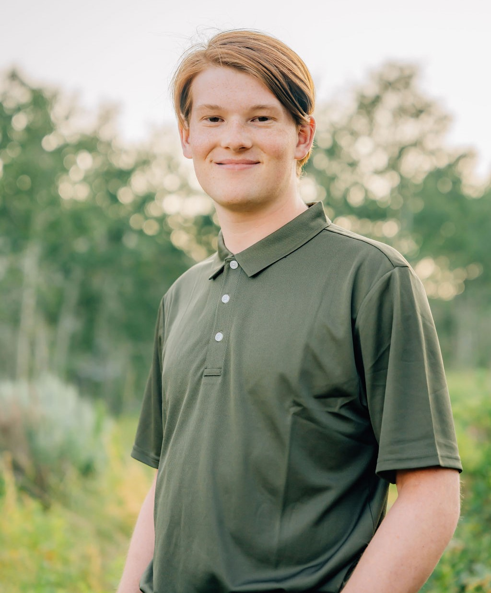

Welcome!
Hi, I'm Kasen Lindquist, a dedicated web developer based in Utah. My journey in web development began
in Junior High when I took my first Website Development class. Initially, I joined the class to try
something cool and hopefully snag an easy A, but I quickly discovered a passion for creating and
coding websites. Although my formal education in web development was somewhat limited, I eagerly
sought out resources to expand my knowledge. I learned extensively from platforms like W3Schools,
YouTube, and other online communities. This self-driven learning helped me build a solid foundation
in web development.
In High School, I discovered the Davis Catalyst
Center, a unique school that facilitated transportation for students between their home high
schools and specialized career oriented courses at the Catalyst Center. I enrolled in their Web
Development program
during my first semester, which led me to my first real client, the Kanab Travelers Motel. Despite
the motel closing shortly after their website went live, the experience was invaluable.
Since then, I have completed numerous projects, honing my skills and gaining a wealth of experience.
My portfolio now includes diverse projects, each reflecting my growth and commitment to becoming a
successful web developer.
My Tech Stack
Code Skills
Tools
Design Resources
Platforms
Professional Experience
Over the years, I've worked on a variety of projects, including the Travelers Motel website and the internship at the Syracuse Emergency Center for Wadman. My expertise includes mostly of web development, but I also have done a bit of construction at the Davis Catalyst Center and an internship. I've worked on a large variety of web development projects thus far, but by far my favorite is Houston Merrill's website. A country singer that I started working for the beginning of this school year.

More About Me
When I'm not coding, you can find me immersed in a variety of activities that keep my life vibrant and
balanced. I love playing video games, particularly PUBG, Assassin's Creed (Black Flag is the best!), Red
Dead Redemption 2, Call of Duty: Vanguard, and Enlisted. Gaming provides a fantastic way to unwind and
explore different worlds and narratives. Also helps me get my mind off code when the problems get
frustrating.
I also enjoy connecting with my friends on Discord, where we chat, share memes, and trash talk each other.
Spending time with my girlfriend is one of my greatest joys, whether we're out on an adventure or
simply enjoying each other's company.
Outdoor activities like camping and hiking are my go-to for recharging and finding inspiration. The beauty
of nature never fails to amaze me and provides a perfect backdrop for relaxation and reflection. Every year
my dad, my brother, and I go backpacking and have fantastic adventures. Some of my fondest memeories are our
most difficult times during backpacking.
One of my other passions is Dungeons & Dragons (D&D). Whether I'm crafting intricate storylines as a Dungeon
Master or embarking on epic quests as a player, D&D allows me to exercise my creativity and strategic
thinking in a fun and collaborative environment. I'm currently working on making my own complex campaign, it
is called the Shattered realm
I come from a close-knit family of six, including my parents, my brother Aidan, and my two sisters, Caitlyn
and Hailey.
When it comes to movies, two of my current favorites are 13 Hours in Bengazi and Midway. I
love these films for their gripping storytelling, intense action, and historical significance.
Welcome!
Hi, I'm Kasen Lindquist, a dedicated web developer based in Utah. I currently go to the Davis Catalyst Center and Syracuse High School. My journey in web development began in Junior High when I took my first Website Development class. Initially, I joined the class to try something cool and hopefully snag an easy A, but I quickly discovered a passion for creating and coding websites. Although my formal education in web development was somewhat limited, I eagerly sought out resources to expand my knowledge. I learned extensively from platforms like W3Schools, YouTube, and other online communities. This self-driven learning helped me build a solid foundation in web development. In High School, I discovered the Davis Catalyst Center, a unique program that facilitated transportationfor students between their home high schools and specialized courses at the Catalyst Center. I enrolled in their Web Development program during my first semester, which led me to my first real client, the Kanab Travelers Motel. Despite the motel closing shortly after their website went live, the experience was invaluable. Since then, I have completed numerous projects, honing my skills and gaining a wealth of experience. My portfolio now includes diverse projects, each reflecting my growth and commitment to becoming a successful web developer.
Professional Experience
Over the years, I've had the opportunity to work on a variety of projects, honing my expertise primarily in web development. Below are some of my notable experiences:
- Travelers Motel Website: Developed a fully functional and aesthetically pleasing website for Travelers Motel, ensuring a seamless user experience. Helping viewers find a comfortable and cheap living space for a adventurous vacation in southern Utah.
- Internship at Syracuse Emergency Center for Wadman: Contributed to various projects and gained valuable insights. Also was able to help around in a real construction work enviroment.
- Davis Catalyst Center: A career program based school that I have been taking Web Development and Counstruction
- Houston Merrill's Website: Among my favorite projects, I created a website for Houston Merrill, showcasing my ability to build engaging and user-friendly web platforms. This website is helping spread his different social media accounts and annoucing events and release dates.
I have a passion for trying new things, learning, and experimenting with code. This passion led me to build this website and purchase this domain as a playground for my code. It also serves as a platform to showcase my skills and get my name out there. My portfolio contains more details about my projects and experiences.
Get in Touch
Interested in working together? Feel free to contact me or visit my portfolio to see more of my work.